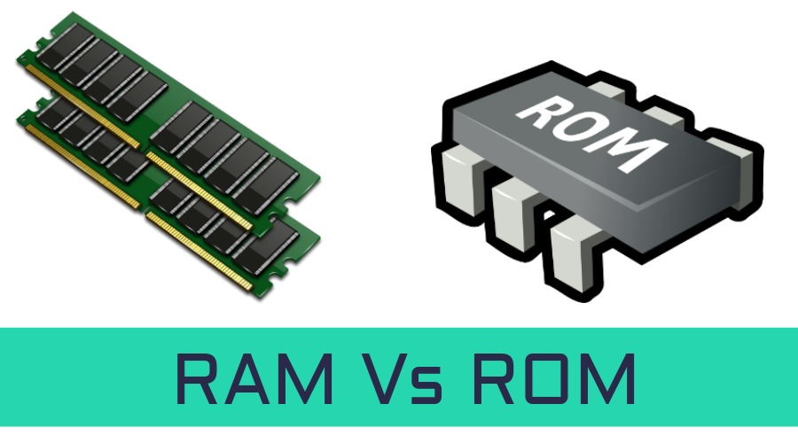

beweeg de muis over de button om het dropdown menu te openen
RAM is tijdelijk geheugen, snel en wordt gebruikt voor actieve computerbewerkingen, terwijl ROM permanent geheugen, niet-vluchtig en gebruikt wordt voor het opstarten van de computer en het opslaan van firmware en instructies die nodig zijn voor de werking ervan. Deze gegevens gaan niet verloren ook al wordt de spanning verwijderd.
permanente geheugen
Permanente geheugen is het computergeheugen dat ervoor zorgt dat de gegevens opgeslagen blijven ook als de computer is uitgeschakeld
In de informatica verwijst het begrip "bus" naar een communicatiesysteem dat wordt gebruikt om gegevens en signalen tussen verschillende onderdelen van een computer of tussen verschillende computers over te dragen. Een bus wordt vaak intern in een computer gebruikt om de verschillende onderdelen van het computersysteem met elkaar te verbinden en gegevensuitwisseling mogelijk te maken.
